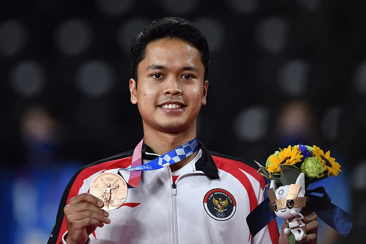

Lifter Nurul Akmal Tutup Perjuangan Indonesia di Olimpiade Tokyo 2020KOMPAS.com - Lifter putri Indonesia, Nurul Akmal, menutup perjuangan Indonesia di Olimpiade Tokyo 2020. Nurul Akmal yang turun di kelas +87 kg putri menjadi wakil Merah Putih yang bertanding terakhir pada hari ini, Senin (2/8/2021). Lihat Selengkapnya>>>>> Rekap Kiprah Wakil Badminton Indonesia di Olimpiade Tokyo, Sumbang 2 MedaliKOMPAS.com Perjalanan tim bulu tangkis Indonesia di Olimpiade Tokyo 2020 telah rampung pada Senin (2/8/2021). Hasilnya, Indonesia membawa pulang dua medali dari olahraga tepok bulu ini dengan rincian masing-masing satu emas dan satu perunggu. Lihat Selengkapnya>>>>>
Raih Medali Emas di Olimpiade Tokyo, Greysia Polii Ukir 2 Rekor IstimewaKOMPAS.com - Pebulu tangkis putri Indonesia, Greysia Polii, mengukir dua rekor istimewa seusai memenangi medali emas di Olimpiade Tokyo 2020 Lihat Selengkapnya>>>>>
Breaking News, Windy Cantika Sumbang Medali Pertama Indonesia di Olimpiade Tokyo 2020!Windy Cantika Aisah menjadi atlet Indonesia pertama yang berhasil meraih medali di Olimpiade Tokyo 2020. Windy Cantika Aisah merupakan atlet angkat besi putri Indonesia yang kini masih berusia 19 tahun. Lihat Selengkapnya>>>>>
Legenda Indonesia Soroti Mental Marcus/Kevin di Olimpiade Tokyo 2020Mantan pemain ganda putra Indonesia, Rexy Mainaky, menyoroti mental Marcus Fernaldi Gideon/Kevin Sanjaya Sukamuljo di Olimpiade Tokyo 2020. Rexy Mainaky yang saat ini menjadi pelatih kepala timnas bulu tangkis Thailand, menyebut aspek mental menjadi faktor utama Marcus/Kevin tak bisa melaju jauh di Olimpiade Tokyo. Lihat Selengkapnya>>>>> |
| ©Kompas.com |